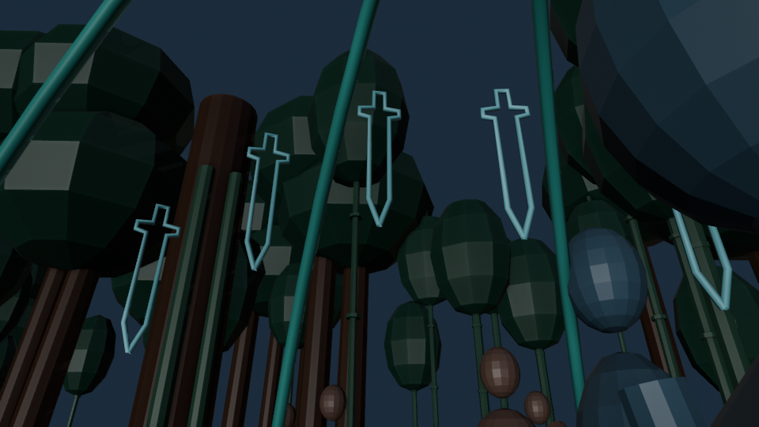
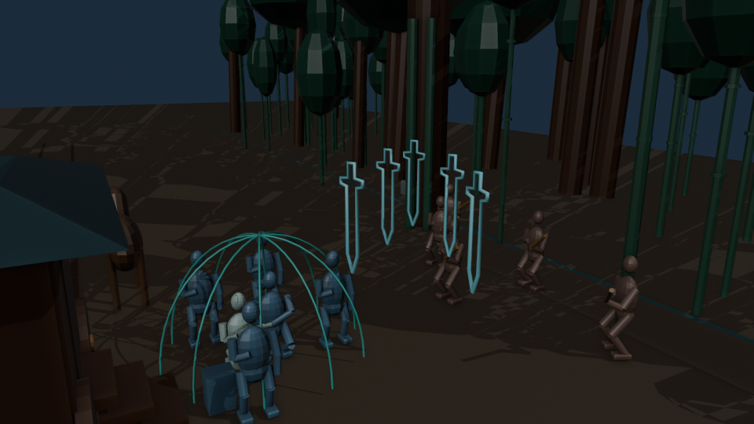
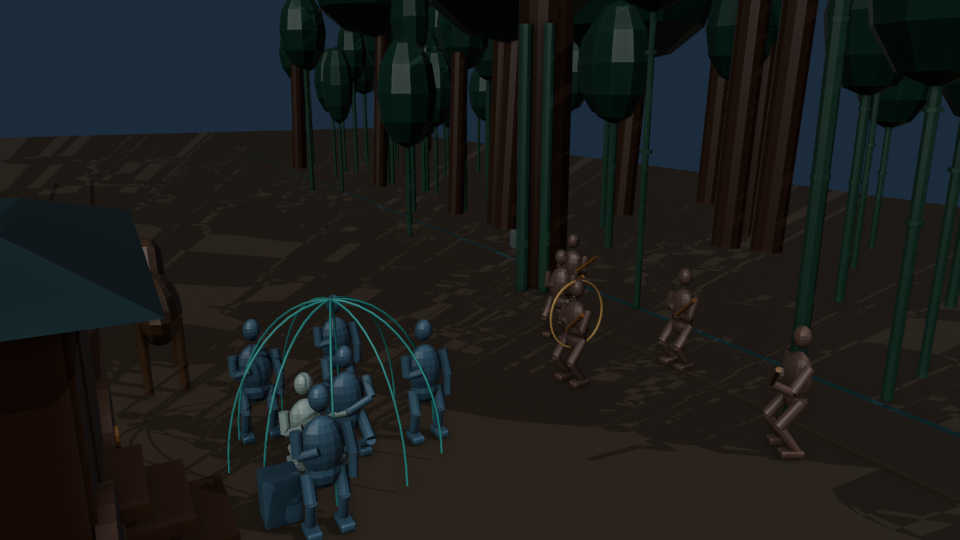

《经世》／林道惊杀／本地三维预演
分剑技术参考 · 三维制作暂停
仅为备选参考，不适用现行独斗站位。
用户要求所有内容先不建模。当前剧情为先捉对打退首波、高手压上后结阵拦四、原顾阵外独斗；此片不用于当前剧情验收。现有MP4未与当前工程及渲染帧重新打包绑定。
15 秒 · 360 帧 · 24 fps · 960×540。原研究关联 SH021—SH022 的五个子镜，研究分剑数量、退敌空间和切镜次序。点击右侧条目跳转；视频无声音。
这是动作研究片，尚未通过正式镜头验收。
青色轮廓＝剑气占位；绿色弧线＝护罩范围；橙色环＝黄祁气膜占位。代理体滑移不代表步法，线框不代表最终仙侠特效。扶持接触、剑刃交锋、雨叶和交互光、表情与“撤”的声音尚未制作。

第 65 帧：低视点与五剑间距
第 168 帧：客观机位确认敌我位置
第 288 帧：剑形消失，护送者仍在